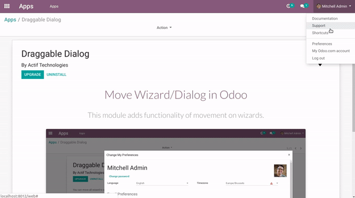

<section class="oe_container">
    <div class="oe_row oe_spaced">
        <h2 class="oe_slogan" style="color:#875A7B;">Move Wizard/Dialog in Odoo</h2>
        <h3 class="oe_slogan" class="oe_slogan">This module adds functionality of movement on wizards.</h3>
        
    </div>
</section>
